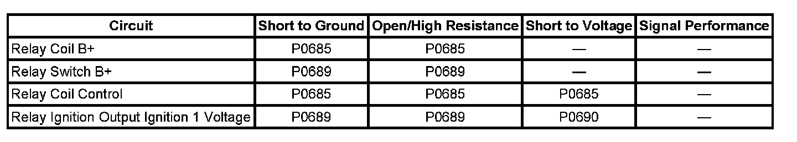
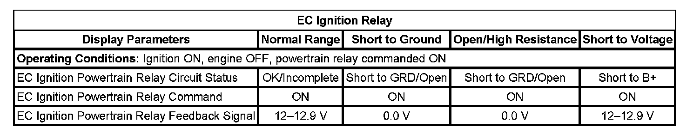

P0690
DTC P0685, P0689, or P0690
DIAGNOSTIC INSTRUCTIONS
- Perform the Diagnostic System Check - Vehicle prior to using this diagnostic procedure. Initial Inspection and Diagnostic Overview
- Strategy Based Diagnosis for an overview of the diagnostic approach.
- Diagnostic Procedure Instructions provide an overview of each diagnostic category.
DTC DESCRIPTORS
DTC P0685
Computers and Control Systems Ignition Relay Control Circuit
DTC P0689
Computers and Control Systems Relay Feedback Circuit Low Voltage
DTC P0690
Computers and Control Systems Relay Feedback Circuit High Voltage

DIAGNOSTIC FAULT INFORMATION
TYPICAL SCAN TOOL DATA
EC Ignition Relay:

CIRCUIT/SYSTEM DESCRIPTION
The powertrain relay is a normally open relay. The relay armature is held in the open position by spring tension. Battery positive voltage is supplied directly to the relay coil and the armature contact at all times. The engine control module (ECM) supplies the ground path to the relay coil control circuit via an internal integrated circuit called an output driver module (ODM). The ODM output control is configured to operate as a low side driver for the powertrain relay. The ODM for the powertrain relay also incorporates a fault detection circuit, which is continuously monitored by the ECM. When the ECM commands the powertrain relay ON, ignition 1 voltage is supplied to the ECM, and to several additional circuits.
CONDITIONS FOR RUNNING THE DTC
DTC P0685
- The ignition is ON.
- The battery voltage is between 9-16 volts.
DTC P0689
- The ignition is ON.
- The powertrain relay is commanded ON.
- DTC P0685 is not set.
DTC P0690
- This DTC will run with the ignition ON or OFF.
- This DTC will run when the powertrain relay is commanded ON or OFF.
- DTC P0685 is not set.
CONDITIONS FOR SETTING THE DTC
DTC P0685
- The commanded state of the ODM and the actual state of the control circuit do not match.
- The condition is present for more than 5 seconds.
DTC P0689
- The ECM detects less than 5 volts on the ignition 1 voltage circuit to the ECM.
- The condition is present for more than 5 seconds.
DTC P0690
- The ECM detects more than 16 volts on the ignition 1 voltage circuit to the ECM when the relay is commanded ON.
- The ECM detects more than 2 volts on the ignition 1 voltage circuit to the ECM when the relay is commanded OFF.
- The condition is present for more than 2 seconds.
ACTION TAKEN WHEN THE DTC SETS
DTCs P0685, P0689, and P0690 are Type B codes.
CONDITIONS FOR CLEARING THE DTC
DTCs P0685, P0689, and P0690 are Type B codes.
DIAGNOSTIC AIDS
This test procedure requires that the vehicle battery has passed a load test and is completely charged. Refer to Battery Inspection/Test. Battery Inspection/Test
CIRCUIT/SYSTEM VERIFICATION
1. IMPORTANT: On the scan tool, the powertrain relay is referred to as the EC ignition relay.
Ignition ON, engine OFF, command the powertrain relay ON and OFF several times using the scan tool output control function. You should either hear or feel the relay click with each command.
2. Ignition ON, engine OFF, with a test lamp, probe both test points of all of the fuses that are powered by the powertrain relay. The test lamp should illuminate on at least one test point of each fuse.
- If the vehicle passes the Circuit/System Verification Test, then operate the vehicle within the Conditions for Running the DTC. You may also operate the vehicle within the conditions that are captured in the Freeze Frame/Failure Records Data list.
CIRCUIT/SYSTEM TESTING
1. Ignition OFF, disconnect the powertrain relay.
2. Ignition ON, verify that a test lamp does not illuminate between the relay coil control circuit and ground.
- If the test lamp illuminates, test the relay coil control circuit for a short to voltage. If the circuit tests normal, replace the ECM.
3. Verify that a test lamp does not illuminate between the relay ignition 1 voltage circuit and ground.
- If the test lamp illuminates, test the relay ignition 1 voltage circuit for a short to voltage. If the circuit tests normal, replace the ECM.
4. Verify that a test lamp illuminates between the relay coil B+ and ground.
- If the test lamp does not illuminate, test the relay coil B+ circuit for a short to ground or an open/high resistance.
5. Verify that a test lamp illuminates between the relay switch B+ and ground.
- If the test lamp does not illuminate, test the relay switch B+ circuit for a short to ground or an open/high resistance. If the circuits test normal and the fuse for the ignition 1 voltage circuit is open, test the ignition 1 voltage circuit to the ECM for a short to ground. If the circuit tests normal, replace the ECM.
6. Connect a test lamp between the relay coil B+ and the relay coil control circuit.
7. Ignition ON, command the powertrain relay ON and OFF with a scan tool. The test lamp should turn ON and OFF when changing between the commanded states.
- If the test lamp is always ON, test the relay coil control circuit for a short to ground. If the circuit tests normal, replace the ECM.
- If the test lamp is always OFF, test the relay coil control circuit for a short to voltage or an open/high resistance. If the circuit tests normal, replace the ECM.
8. Connect a 20A fused jumper wire between the relay switch B+ and the relay ignition 1 voltage circuit.
9. Ignition ON, engine OFF, monitor the EC Ignition Relay Feedback parameter with a scan tool. The parameter should display B+.
- If the parameter does not display B+, test the ignition 1 voltage circuit for an open/high resistance. If the circuit tests normal, replace the ECM.
10. If all circuits test normal, test or replace the relay.
COMPONENT TESTING
1. Ignition OFF, disconnect the powertrain relay.
2. Test for 65-110 ohms of resistance between terminals 85 and 86 of the relay.
- If the resistance is not within the specified range, replace the relay.
3. Test for infinite resistance between the following terminals:
- Terminal 30 and 86
- Terminal 30 and 87
- Terminal 30 and 85
- Terminal 85 and 87
- If not the specified value, replace the relay.
4. Install a 20A fused jumper wire between relay terminal 85 and 12 volts. Install a jumper wire between relay terminal 86 and ground. Test for less than 1 ohm of resistance between terminals 30 and 87.
- If greater than the specified range, replace the relay.
REPAIR INSTRUCTIONS
Perform the Diagnostic Repair Verification after completing the diagnostic procedure.
- Relay Replacement (Attached to Wire Harness) Relay Replacement (Within an Electrical Center)
- Underhood Electrical Center or Junction Block Replacement
- Control Module References for ECM replacement, setup, and programming. Verification Tests